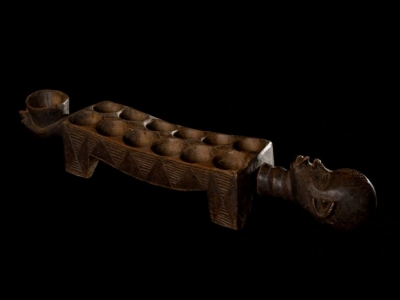

Antes de serem como conhecemos atualmente, com gráficos impecáveis, e jogabilidade completamente imersiva, os games passaram por todo um desenvolvimento ao longo da história, iniciando com brincadeiras simples que os povos antigos costumavam fazer, ou os famosos jogos de tabuleiro que são lembrados e jogados até os dias atuais, como o xadrez por exemplo. De fato, quando se trata de entretenimento, o ser humano consegue ser bastante criativo, que tal conhecer um pouco dos meios que o homem criou para "dispensar o tédio" ao longo da história?
Os jogos de tabuleiro, com certeza foram uma peça essencial no desenvolvimento dos jogos, estando presentes ao longo da história, e tendo registros de surgimento mais antigos datados em milhares de anos a.C., tendo sido criados por antigos povos africanos e asiáticos.
Os primeiros jogos de tabuleiro registrados são datados em cerca de 7.000 anos a.C., e o jogo mais antigo conhecido chama-se “Mancala” , com origem africana. Trata-se de uma família de jogos praticados com sementes, que têm um viés matemático, pois funcionavam em um sistema de contagem e captura de sementes do jogador adversário. O jogo é tão simples que o tabuleiro podia ser construído com buracos no chão de terra. Esse jogo é considerado o “pai de todos os jogos de tabuleiro”.
Tabuleiro de Mancala, jogo praticado com sementes. Fonte.